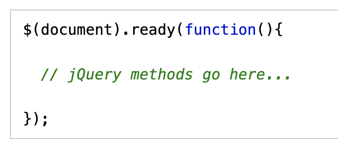
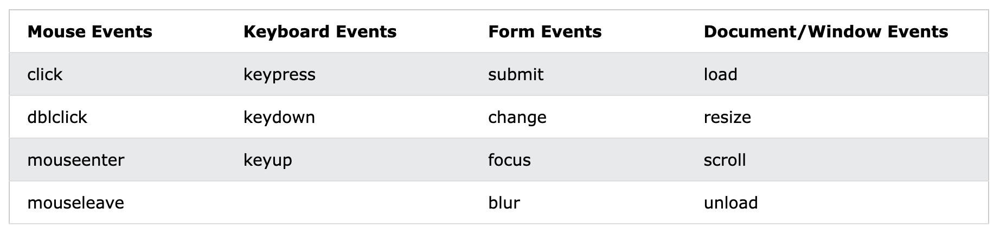

Why Study jQuery ?
- ★ jQuery is a library to the JavaScript programming language.
- ★ Learning jQuery is the fastest and easiest way to add interactivity and animation to your website.
- ★ Not only is it a great way to get introduced to the what JavaScript can help you accomplish,
- ★ but this lightweight library will also let you leverage the HTML and CSS skills you’ve already learned.
- ★ jQuery greatly simplifies JavaScript programming.
- ★ The purpose of jQuery is to make it much easier to use JavaScript on your website.
jQuery Get Started
- ★ Adding jQuery to your web pages.
- ★ jQuery CDN:
- ☆ You can include it from a CDN (Content Delivery Network).
- ☆ To use jQuery from Google:
<head> <script src="https://ajax.googleapis.com/ajax/libs/jquery/3.5.1/jquery.min.js"></script> </head>
<head> <script src="https://ajax.aspnetcdn.com/ajax/jQuery/jquery-3.5.1.min.js"></script> </head>
- ☆ Many users already have downloaded jQuery from Google or Microsoft when visiting another site. As a result, it will be loaded from cache when they visit your site, which leads to faster loading time. Also, most CDN's will make sure that once a user requests a file from it, it will be served from the server closest to them, which also leads to faster loading time.
jQuery Syntax
- ★ With jQuery you select (query) HTML elements and perform "actions" on them.
- ★ Basic syntax is: $(selector).action()
- ☆ A $ sign to define/access jQuery
- ☆ A (selector) to "query (or find)" HTML elements
- ☆ A jQuery action() to be performed on the element(s)
Examples:
$(this).hide() - hides the current element.$("p").hide() - hides all <p> elements.
$(".test").hide() - hides all elements with class="test".
$("#demo").hide() - hides the element with id="demo".
The Document Ready Event
All jQuery methods in our examples, are inside a document ready event:
This is to prevent any jQuery code from running before the document is finished loading (is ready).
jQuery Selectors
- ★ jQuery selectors are one of the most important parts of the jQuery library.
- ★ jQuery selectors allow you to select and manipulate HTML element(s).
- ★ jQuery selectors are used to "find" (or select) HTML elements based on their name, id, classes, types, attributes, values of attributes and much more.
- ★ All selectors in jQuery start with the dollar sign and parentheses: $().
The element Selector
- ♣ The jQuery element selector selects elements based on the element name.
- ♣ You can select all <p> elements on a page like this: $("p")
$(document).ready(function(){
$("button").click(function(){
$("p").hide();
});
});
// When a user clicks on a button, all <p> elements will be hidden.
In this code, the $ symbol is used to create a jQuery object. The document.ready() method is used to ensure that the jQuery code is executed only after the document is fully loaded.
The #id Selector
- ♣ The jQuery #id selector uses the id attribute of an HTML tag to find the specific element.
- ♣ An id should be unique within a page, so you should use the #id selector when you want to find a single, unique element.
- ♣To find an element with a specific id, write a hash character, followed by the id of the HTML element: $("#test")
$(document).ready(function(){
$("button").click(function(){
$("#test").hide();
});
});
// When a user clicks on a button, the element with id="test" will be hidden.
The .class Selector
- ♣ The jQuery .class selector finds elements with a specific class.
- ♣ To find elements with a specific class, write a period character, followed by the name of the class: $(".demo")
$(document).ready(function(){
$("button").click(function(){
$(".demo").hide();
});
});
// When a user clicks on a button, the element with calss="demo" will be hidden.
More Examples of jQuery Selectors
https://www.w3schools.com/jquery/jquery_ref_selectors.aspjQuery Event Methods
What are Events?
- ★ All the different visitors' actions that a web page can respond to are called events.
- ★ An event represents the precise moment when something happens.
- ★ Examples:
- ☆ moving a mouse over an element
- ☆ selecting a radio button
- ☆ clicking on an element
- ★ The term "fires/fired" is often used with events. Example: "The keypress event is fired, the moment you press a key".
- ★ Here are some common DOM events: 
jQuery Syntax For Event Methods
- ★ In jQuery, most DOM events have an equivalent jQuery method.
- ★ To assign a click event to all paragraphs on a page, you can do this:
$("p").click();
$("p").click(function(){
// action goes here!!
});
Commonly Used jQuery Event Methods
click()
- ★ The click() method attaches an event handler function to an HTML element.
- ★ The function is executed when the user clicks on the HTML element.
- ★ The following example says: When a click event fires on a <p> element; hide the current <p> element:
$(document).ready(function(){
$("p").click(function(){
$(this).hide();
});
});
dblclick()
- ★ The dblclick() method attaches an event handler function to an HTML element.
- ★ The function is executed when the user double-clicks on the HTML element:
$(document).ready(function(){
$("p").dblclick(function(){
$(this).hide();
});
});
mouseenter()
- ★ The mouseenter() method attaches an event handler function to an HTML element.
- ★ The function is executed when the mouse pointer enters the HTML element:
$(document).ready(function(){
$("#p1").mouseenter(function(){
alert("You entered p1!");
});
});
mouseleave()
- ★ The mouseleave() method attaches an event handler function to an HTML element.
- ★ The function is executed when the mouse pointer leaves the HTML element:
$(document).ready(function(){
$("#p1").mouseleave(function(){
alert("Bye! You now leave p1!");
});
});
hover()
- ★ The hover() method takes two functions and is a combination of the mouseenter() and mouseleave() methods.
- ★ The first function is executed when the mouse enters the HTML element, and the second function is executed when the mouse leaves the HTML element:
$(document).ready(function(){
$("#p1").hover(function(){
alert("You entered p1!");
},
function(){
alert("Bye! You now leave p1!");
});
});
focus()
- ★ The focus() method attaches an event handler function to an HTML form field.
- ★ The function is executed when the form field gets focus:
blur()
- ★ The blur() method attaches an event handler function to an HTML form field.
- ★ The function is executed when the form field loses focus:
In JavaScript:
$(document).ready(function(){
$("input").focus(function(){
$(this).css("background-color", "yellow");
});
$("input").blur(function(){
$(this).css("background-color", "green");
});
});
In HTML:
Name: <input type="text" name="fullname"><br>
Email: <input type="text" name="email">
The on() Method
- ★ The on() method attaches one or more event handlers for the selected elements.
- ★ Attach a click event to a <p> element:
$(document).ready(function(){
$("p").on("click", function(){
$(this).hide();
});
});
$(document).ready(function(){
$("p").on({
mouseenter: function(){
$(this).css("background-color", "lightgray");
},
mouseleave: function(){
$(this).css("background-color", "lightblue");
},
click: function(){
$(this).css("background-color", "yellow");
}
});
});
The Document Object Model
- ★ To get the most out of jQuery, we should review how an HTML page is put together.
- ★ An HTML document is structured according to the Document Object Model, or DOM.
- ★ It’s by interacting with the DOM that jQuery is able to access and modify HTML..
The Document Nodes
In the HTML DOM (Document Object Model), everything is a node:- ★ The document itself is a document node.
- ★ All HTML elements are element nodes.
- ★ All HTML attributes are attribute nodes.
- ★ Comments are comment nodes.
The Document Object
- ★ When an HTML document is loaded into a web browser, it becomes a document object. The document object is the root node of the HTML document and the "owner" of all other nodes.
- ★ The document object provides properties and methods to access all node objects, from within JavaScript.
$(document).ready()
We’ll start our jQuery magic using the $(document).ready():- ★ $() says, "We are going to use jQuery !".
- ★ Putting document between the parentheses tells us that we’re about to work our magic on the HTML document itself.
- ★ .ready() is a function, or basic action, in jQuery. It tells us jQuery is going to do stuff as soon as the HTML document is ready.
- ★ Whatever goes in .ready()’s parentheses is the jQuery event that occurs as soon as the HTML is ready.
- ★ $(document).ready(something) says “when the HTML document is ready, do something!”.
- ★ Note that .ready(); ends with a semicolon.
- ★ This tells jQuery that you’re done giving it a command.
The functional approach
- ★ Now we need to put something inside our ready() function.
- ★ Functions are the basic unit of doing work in jQuery.
- ★ For this reason, jQuery includes a function keyword. The syntax looks like this:
$(document).ready(function(){
// jQuery methods go here...
});